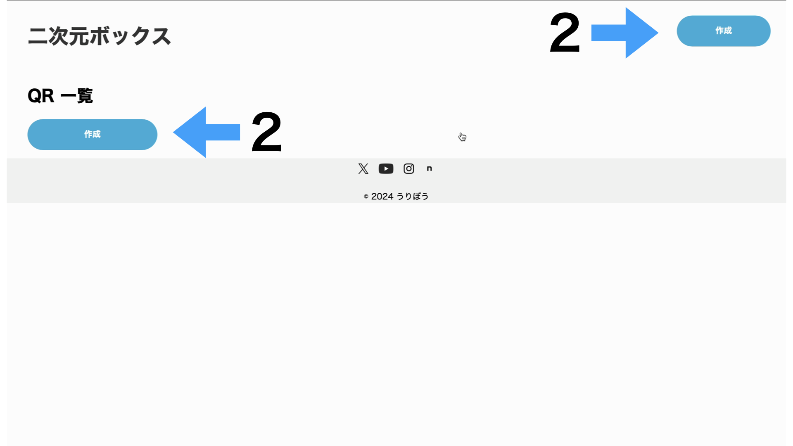
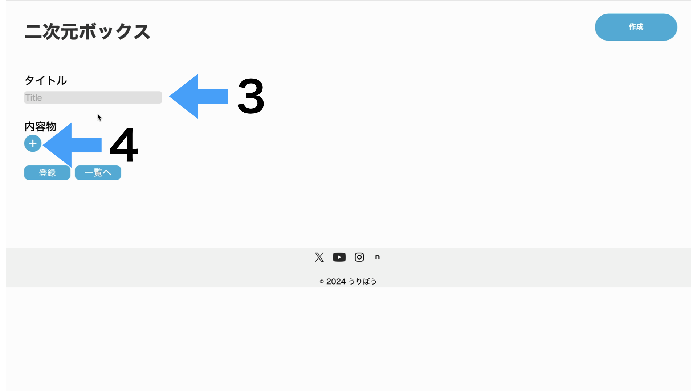
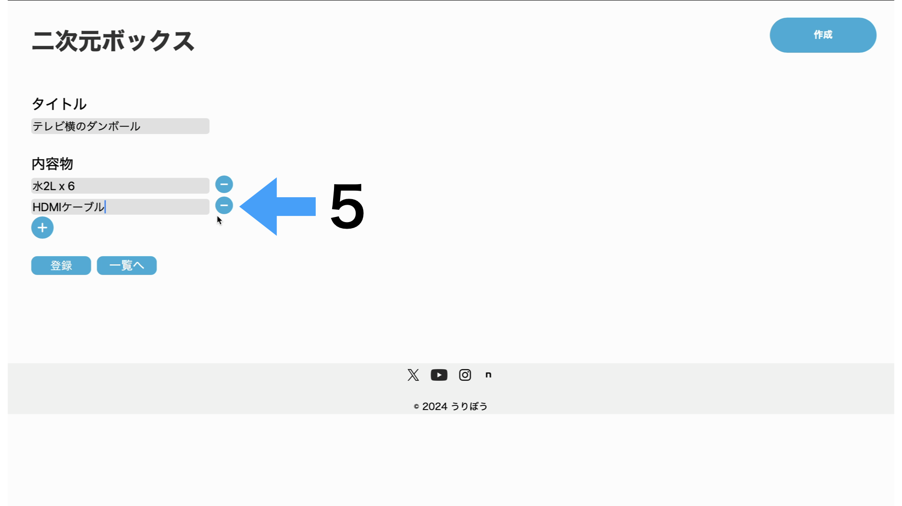
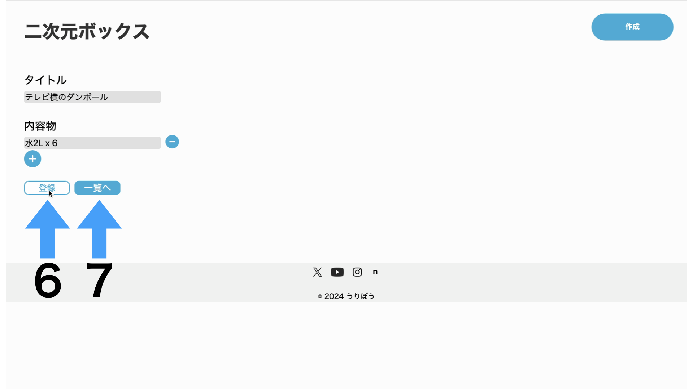
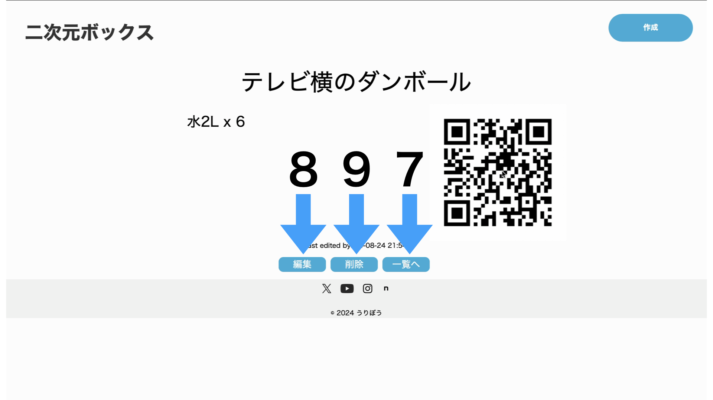

二次元ボックスのURL(1)をクリック。

どちらかのボタン(2)で新規作成。
タイトル欄(3)に箱など名前を、+ボタン(4)で内容物リストを追加していきます。
必要無くなったリストは-ボタン(5)で削除。
登録ボタン(6)で上記の内容をサーバーに登録。一覧へボタン(7)を押すと登録ずみの内容の一覧を表示できます。登録してない内容は削除されます。
編集ボタン(8)で登録内容の編集(2024/08/24現在未実装のため、編集不可)、削除ボタン(9)で登録内容の削除ができます。一覧へボタン(7)で一覧表示ができます。
